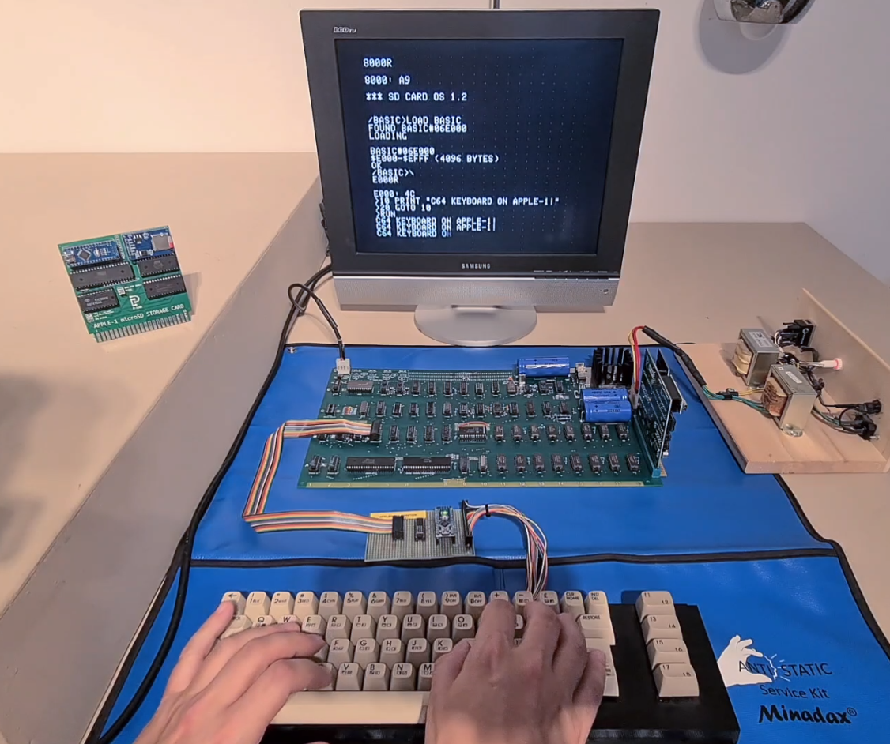
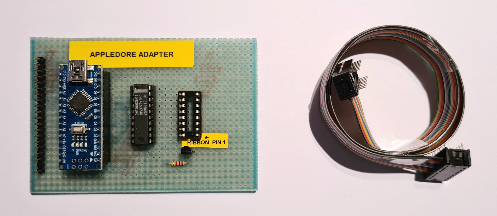
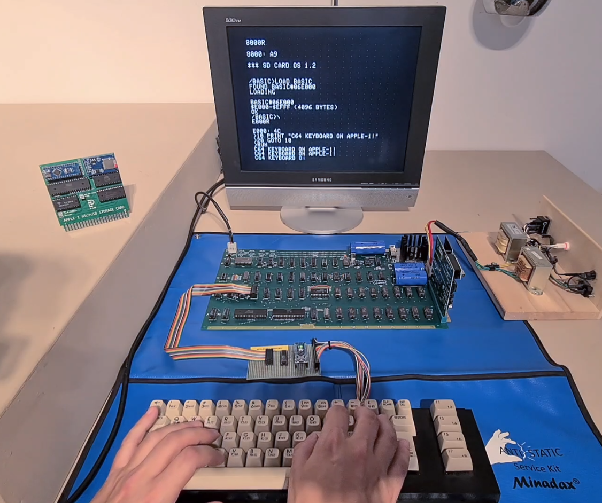
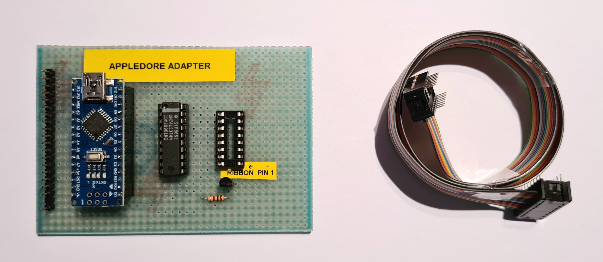
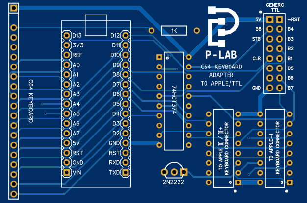
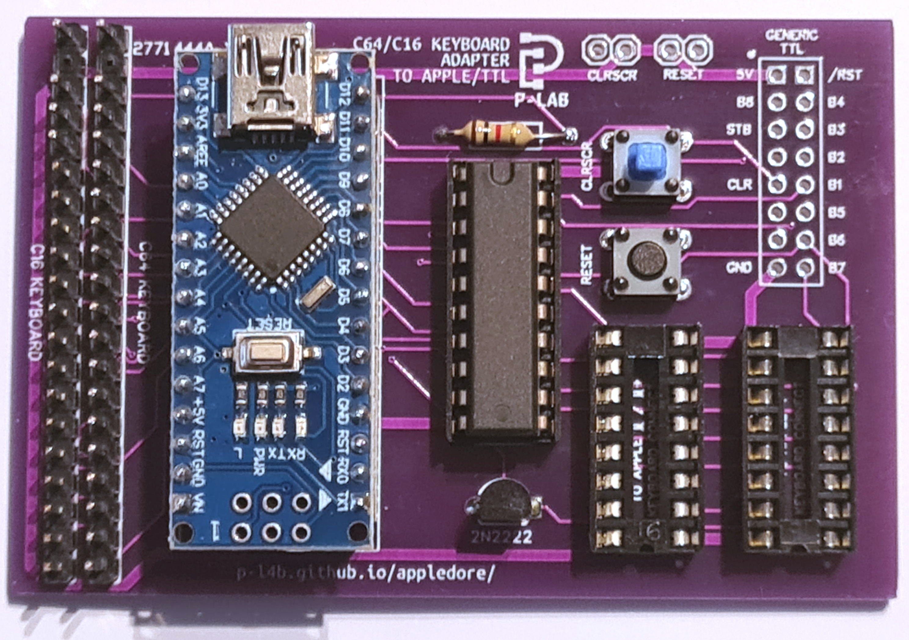

APPLEDORE - COMMODORE KEYBOARD TO APPLE-1 / II / II+ / TTL KEYBOARD ADAPTER
 



Documents hosted here:
PCB VERSION 1.0 - C64 KEYBOARD ONLY
PROJECT DESCRIPTIONProject Description ITA [pdf]
Project Description ENG [pdf]
DOCUMENTS

Arduino Nano source code [ino/txt]
File sender BASH script [text]
Schematic [png]
Gerber [zip]
EasyEDA project file [json]
Bill of Materials [txt]
PCB VERSION 1.1 - C64 - C16 KEYBOARD
PROJECT DESCRIPTIONProject Description ITA [pdf]
Project Description ENG [pdf]
Compatibility modifications for Briel Computers Replica-1 Plus ITA/ENG [pdf]
DOCUMENTS

Arduino Nano source code for Commodore 16 keyboard [ino/txt]
Arduino Nano source code for Commodore 64 keyboard [ino/txt]
File sender BASH script [text]
Schematic [png]
Gerber [zip]
EasyEDA project file [json]
Bill of Materials [txt]
External links:
Official Video [YouTube]
This work is licensed under CC BY 4.0